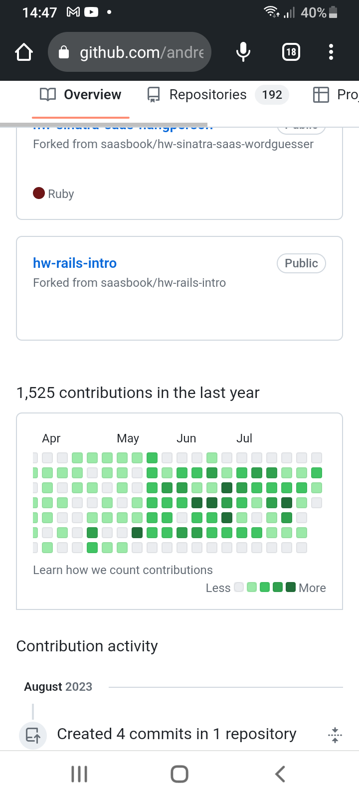

Juro que este texto não é uma choradeira, não estou reclamando de nenhuma empresa. Mas queria que você tivesse certeza que "dou o sangue". Mesmo. Eu por exemplo para acelerar um processo em empresas passadas já usei por exemplo minha conta pessoal da AWS, da Udemy, do Dropbox, do Google Drive, minha conta no Github etc. Não reclamo de fazer isto. Eu dou o sangue, quero que o processo seja acelerado e nas empresas eventualmente o processo é um pouco burocrático. Usando minha conta pessoal, ok, eu me arrisco a ter um custo inesperado, mas este custo inesperado nunca aconteceu. Ok, meus locais para armazenamento de arquivos na Internet quase lotam (somado com as minhas outras coisas, que ocupam muito mais espaço), como o meu espaço no Google Drive ou no Dropbox, mas o que eu vejo que está ao meu alcance eu faço, não fico "fazendo hora me escorando" em burocracia. Não estou entrando no mérito se a burocracia em um caso específico precisa existir ou não. Acho que é um meio termo. Em alguns casos precisa existir porque se não vira bagunça. Em outros é excessiva e atrapalha, mas é bacana quando dá para contornar de alguma forma. E em outros casos ela está no nível adequado. Não vou julgar isto, SE POSSÍVEL (nem sempre é possível e não cabe a mim julgar se é possível ou não) tento contorar a burocracia, tornando o que precisa se fazer mais rápido.
Eu não tenho problemas em trabalhar locado, no escritório da empresa. Não tenho problemas de horário. Costumo falar (e é verdade) que preciso de uma máquina com acesso à Internet, uma mesa e uma cadeira para trabalhar, o resto conversamos e adicionamos na medida do possível, entendendo que sem tudo é possível para uma empresa.
Uma coisa que certamente, certeza, não me verá é reclamar, jogar um "problema para o alto" e infectar um ambiente. Nunca.
Abaixo mostro meu ritmo de commits em uma empresa que trabalhei recentemente. Os dias com poucos ou nenhum commit é que estava trabalhando em um painel em uma cloud e este painel não usava o Github... E sim, eu estava usando a minha conta pessoal do Github (novamente, que fique claro que não estou reclamando, é que esta era a melhor imagem para eu mostrar a respeito dos meus commits). Verá também um período com vários "buracos" na imagem, mas neste período eu não estava usando o meu Github pessoal em uma empresa.
